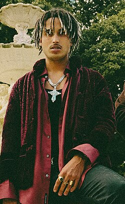
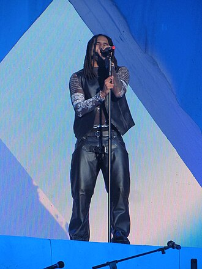
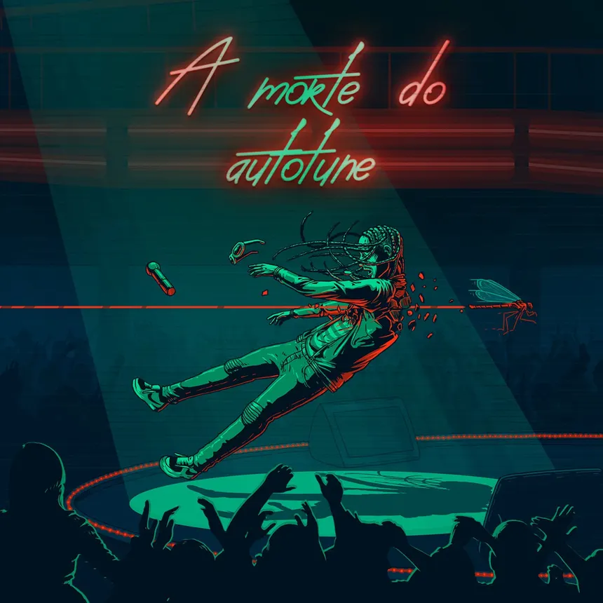

S u a h i s t o r i a
Matue nasceu em Fortaleza, capital do Ceara. Durante sua infancia, aos oito anos, mudou-se com seus pais para Oakland, cidade localizada no estado da California, nos Estados Unidos. Ficando por tres anos no pais, conseguiu se tornar fluente em lingua inglesa, ate voltar para o Brasil em 2004, aos 11 anos.
Na escola, Matue comecou a ter contato e se interessar pelo mundo do Rap, mas ainda na sua adolescencia passou por momentos dificeis apos perder sua avo, que era uma pessoa que sempre o apoiava. Ele comecou a trabalhar como vendedor em uma loja de roupas de um shopping e, apos um tempo, aproveitando sua experiencia com a lingua inglesa, virou professor particular de ingles. Foi com esse emprego que ele conseguiu juntar um dinheiro para comecar a investir na sua carreira musical.
Em 27 de setembro de 2021, Matue revelou que se tornou pai durante a pandemia, sem dar muitos detalhes sobre.
S u a c a r r e i r a m u s i c a l
Matue iniciou sua carreira em 2015, lancando sua primeira e unica mixtape de reggae, chamado Reggae, produzido pela 30PRAUM. Porem, a mixtape nao fez sucesso e ele decidiu migrar para area do trap.
Em 2016, destacou-se na cena nacional ja no seu primeiro lancamento de trap, "RBN", com um videoclipe de estetica impar e enorme originalidade musical, o tornando caracteristico pelo seu estilo harmonico vocal.
Desde entao, o artista e diretor criativo da 30PRAUM inova a cada lancamento, superando suas producoes anteriores e trazendo novas sonoridades. Sempre apresentando uma variedade de flows e harmonias, diferenciando a cada musica, mas sem perder a qualidade e originalidade. Matue tem 7,1 milhoes de ouvintes mensais no Spotify, seu album Maquina do Tempo passou de 110 milhoes de visualizacoes no YouTube em uma semana. Seu principal hit de 2019, "Kenny G" ja conta com mais de 267 milhoes de visualizacoes.
M a t u e


A l b u n s / E P s / T r a c k s

M u s i c a s f a v o r i t a s
Maquina do tempo
Maquina do tempo (track e album) e uma das faixas mais conhecidas do Matue e, para muitos fas, representa o verdadeiro apice do trap nacional quando comparada a outros lancamentos do genero.
A escolha dessa musica tem um significado especial para mim: eu a escutei em um periodo de transicao, em que estava em busca de um estilo musical com o qual eu realmente me identificasse. A originalidade do Matue serviu como minha porta de entrada para o trap, marcando essa minha fase de descoberta.

A morte do autotune
A morte do autotune e um dos maiores divisores de aguas na carreira do Matue e na historia do trap brasileiro. Com sua sonoridade extremamente melodica e viciante, a faixa provou que o uso estetico do autotune, longe de ser apenas uma correcao, poderia ser elevado a um novo patamar de arte, dominando as paradas e definindo uma nova era para o genero no pais.
O impacto dessa musica vai muito alem dos recordes de streaming; ela representa o momento em que a estetica da 30PRAUM se consolidou no cenario nacional. Para mim, essa faixa traz uma nostalgia unica do inicio da explosao do trap, sendo a trilha sonora perfeita que me mostrou como a melodia e o ritmo podem transmitir uma energia de liberdade e confianca sem precedentes.